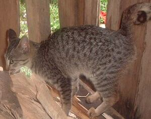

miyew 
/miɔw/
n.
“cat”
n.
Felis_catus
cat
Wrd.Gloss: cat
Eng. cat; kitten
Tag. púsà
Ceb. iring
Ilo.: púsa
OCM: Fauna (136), Domesticated Animals (231)
DDP: Carnivore (1.6.1.1.2)
Idiom: pispis te miyew
—kitten
Idiom: leew ne miyew
—civet cat
Online dict status: -
Usage level: B
v.
for a person, especially a child (egmiyew-miyew, migmiyew-miyew/inmiyew-miyew/pigmiyew-miyew, miyew-miyew, agent, eg><ø-rdpRT-) to pretend to be a cat to immitate a cat; to play a game of cat and mouse
Egmiyew-miyew ki eyew egkahiyen nikandan ne me mentiyanak ki.
We will pretend like cats so that they would think that we are devil cat.
Eng. pretend; immitate cat
Online dict status: -
Usage level: M
Updated by: RJH,TME,NJK,RAA
Last updated: 02/Dec/2009
"miyew" in reader "Ka ngaran te me anak"
"miyew" in text "Examples of Anit"
"miyew" in text "Examples of Anit"
"miyew" in text "Examples of Anit"
This page last updated: 28-Dec-2019
Copyright © 2009-2014, Matigsalug Language Christian Association, Inc